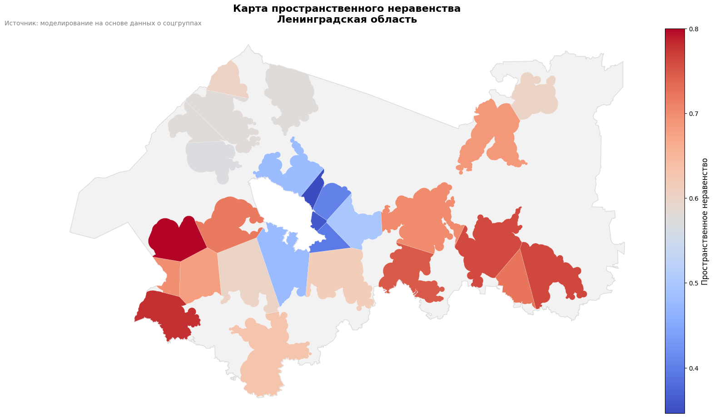
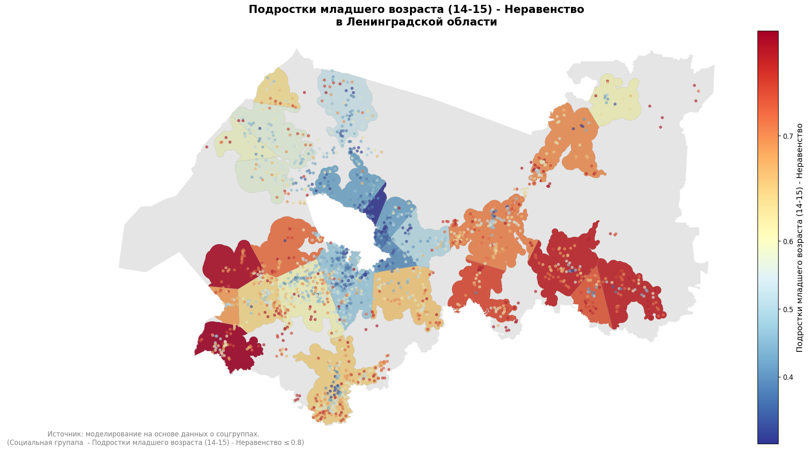
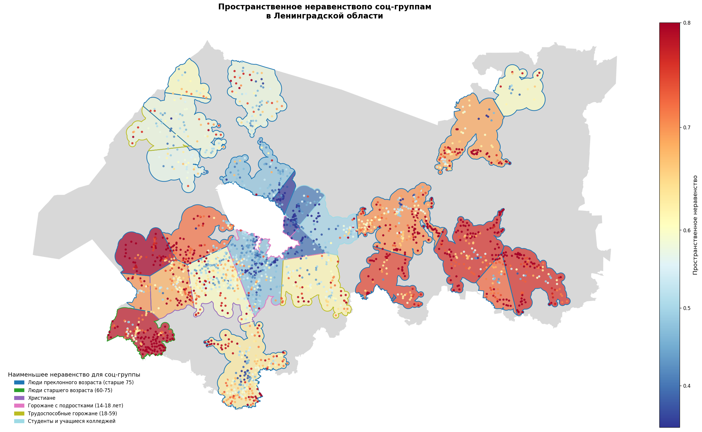
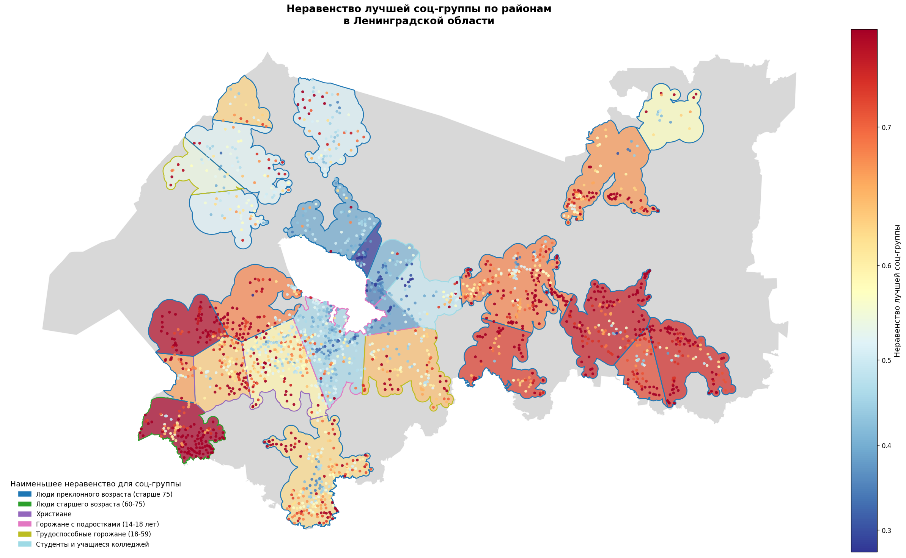

Пространственное неравенство
[ ]:
# import osmnx as ox
import warnings
import sys
import os
from popframe.models.region import Region
import requests
import geopandas as gpd
import pandas as pd
from tqdm import tqdm
warnings.filterwarnings("ignore")
sys.stderr = open(os.devnull, 'w')
Подготовка данных
[ ]:
def preprocess_data(region_id: int, level: int = None) -> gpd.GeoDataFrame:
"""
Загружает оценки неравенства для всех соцгрупп, вычисляет итоговое
Пространственное неравенство, подтягивает название и население
территорий и возвращает итоговый GeoDataFrame.
Параметры:
region_id (int): ID региона для запроса оценок.
level (int, optional): Уровень агрегирования для запроса. По умолчанию None.
Возвращает:
GeoDataFrame с колонками:
- territory_id
- geometry
- для каждой соцгруппы: "{name} - Неравенство", "{name} - Неравенство - basic",
"{name} - Неравенство - additional", "{name} - Неравенство - comfort"
- "Пространственное неравенство"
- name (название территории)
- population (население)
"""
API_URL = "http://10.32.1.102:5510/provision/{region_id}/get_evaluation"
URBAN_API = "http://10.32.1.107:5300"
POP_INDICATOR = 1
# Список соц‑групп
social_groups = [
{"soc_group_id": 1, "name": "Подростки младшего возраста (14-15)"},
{"soc_group_id": 2, "name": "Подростки старшего возраста (16-17)"},
{"soc_group_id": 3, "name": "Трудоспособные горожане (18-59)"},
{"soc_group_id": 4, "name": "Люди старшего возраста (60-75)"},
{"soc_group_id": 5, "name": "Люди преклонного возраста (старше 75)"},
{"soc_group_id": 6, "name": "Горожане, ожидающие ребенка"},
{"soc_group_id": 7, "name": "Горожане с младенцами"},
{"soc_group_id": 8, "name": "Горожане с детьми детсадовского возраста (1-6 лет)"},
{"soc_group_id": 9, "name": "Горожане с детьми младшего школьного возраста (7-13 лет)"},
{"soc_group_id": 10, "name": "Горожане с подростками (14-18 лет)"},
{"soc_group_id": 11, "name": "Христиане"},
{"soc_group_id": 12, "name": "Мусульмане"},
{"soc_group_id": 13, "name": "Иудеи"},
{"soc_group_id": 14, "name": "Буддисты"},
{"soc_group_id": 15, "name": "Студенты и учащиеся колледжей"},
{"soc_group_id": 16, "name": "Горожане с питомцами"},
]
def fetch_gdf(social_group_id: int) -> gpd.GeoDataFrame:
params = {"region_id": region_id, "level": level, "social_group_id": social_group_id}
resp = requests.get(API_URL.format(region_id=region_id), params=params)
resp.raise_for_status()
data = resp.json()
gdf = gpd.GeoDataFrame.from_features(data["features"])
return gdf.set_crs(4326).to_crs(32636)
def fetch_territories(parent_id: int) -> gpd.GeoDataFrame:
params = {
'parent_id': parent_id,
'get_all_levels': True,
'cities_only': True,
'centers_only': True
}
resp = requests.get(f"{URBAN_API}/api/v1/all_territories", params=params)
resp.raise_for_status()
return gpd.GeoDataFrame.from_features(resp.json()['features']).set_crs(4326)
def get_population(terr_gdf: gpd.GeoDataFrame) -> gpd.GeoDataFrame:
resp = requests.get(f"{URBAN_API}/api/v1/indicator/{POP_INDICATOR}/values", verify=False)
resp.raise_for_status()
df = pd.DataFrame(resp.json())
df['territory_id'] = df['territory'].apply(lambda x: x['id'] if isinstance(x, dict) else None)
pop = df.groupby('territory_id')['value'].last().reset_index().rename(columns={'value': 'population'})
terr_gdf = terr_gdf.rename_axis('idx').reset_index()
terr_gdf = terr_gdf.merge(pop, on='territory_id', how='left')
terr_gdf['population'] = terr_gdf['population'].fillna(0)
return terr_gdf.set_index('idx')
# 1) Базовая таблица
first = social_groups[0]
gdf_base = fetch_gdf(first["soc_group_id"])
gdf_final = gdf_base[['territory_id', 'geometry']].copy()
metrics = ["Обеспеченность", "basic", "additional", "comfort"]
# 2) Делаем merge для всех соц‑групп
for grp in tqdm(social_groups, desc="Обработка соц-групп"):
gdf_i = fetch_gdf(grp["soc_group_id"])
df_i = gdf_i[['territory_id'] + metrics].rename(columns={
"Обеспеченность": f"{grp['name']} - Неравенство",
"basic": f"{grp['name']} - Неравенство - basic",
"additional": f"{grp['name']} - Неравенство - additional",
"comfort": f"{grp['name']} - Неравенство - comfort",
})
gdf_final = gdf_final.merge(df_i, on='territory_id', how='left')
# 3) Инвертируем (1 - value) для всех Неравенство-столбцов
ine_cols = [c for c in gdf_final.columns if "Неравенство" in c]
gdf_final[ine_cols] = 1 - gdf_final[ine_cols]
# 4) Итоговое Пространственное неравенство
gdf_final["Пространственное неравенство"] = gdf_final[ine_cols].mean(axis=1).round(2)
# 5) Подтягиваем name и population
terrs = fetch_territories(parent_id=region_id)
terrs = get_population(terrs)
attrs = terrs[['territory_id', 'name', 'population']]
gdf_final = gdf_final.merge(attrs, on='territory_id', how='left')
return gdf_final
[4]:
gdf_final = preprocess_data(region_id=1, level=None)
gdf_final.head()
[4]:
| territory_id | geometry | Подростки младшего возраста (14-15) - Неравенство | Подростки младшего возраста (14-15) - Неравенство - basic | Подростки младшего возраста (14-15) - Неравенство - additional | Подростки младшего возраста (14-15) - Неравенство - comfort | Подростки старшего возраста (16-17) - Неравенство | Подростки старшего возраста (16-17) - Неравенство - basic | Подростки старшего возраста (16-17) - Неравенство - additional | Подростки старшего возраста (16-17) - Неравенство - comfort | ... | Студенты и учащиеся колледжей - Неравенство - basic | Студенты и учащиеся колледжей - Неравенство - additional | Студенты и учащиеся колледжей - Неравенство - comfort | Горожане с питомцами - Неравенство | Горожане с питомцами - Неравенство - basic | Горожане с питомцами - Неравенство - additional | Горожане с питомцами - Неравенство - comfort | Пространственное неравенство | name | population | |
|---|---|---|---|---|---|---|---|---|---|---|---|---|---|---|---|---|---|---|---|---|---|
| 0 | 207 | POINT (542576.859 6580696.856) | 0.75 | 0.83 | 0.25 | 1.0 | 0.76 | 0.83 | 0.25 | 1.0 | ... | 0.83 | 0.25 | 1.0 | 0.76 | 0.83 | 0.25 | 1.0 | 0.71 | деревня Болото | 10.0 |
| 1 | 208 | POINT (544527.863 6593642.176) | 0.56 | 0.58 | 0.12 | 1.0 | 0.59 | 0.58 | 0.12 | 1.0 | ... | 0.58 | 0.12 | 1.0 | 0.58 | 0.58 | 0.12 | 1.0 | 0.57 | деревня Большой Остров | 68.0 |
| 2 | 209 | POINT (544980.557 6593207.96) | 0.41 | 0.33 | 0.12 | 1.0 | 0.44 | 0.33 | 0.12 | 1.0 | ... | 0.33 | 0.12 | 1.0 | 0.42 | 0.33 | 0.12 | 1.0 | 0.47 | деревня Бор | 1734.0 |
| 3 | 210 | POINT (543991.333 6589719.929) | 0.69 | 0.75 | 0.25 | 1.0 | 0.71 | 0.75 | 0.25 | 1.0 | ... | 0.75 | 0.25 | 1.0 | 0.70 | 0.75 | 0.25 | 1.0 | 0.67 | деревня Бороватое | 10.0 |
| 4 | 211 | POINT (538619.331 6577374.018) | 0.78 | 0.83 | 0.38 | 1.0 | 0.79 | 0.83 | 0.38 | 1.0 | ... | 0.83 | 0.38 | 1.0 | 0.79 | 0.83 | 0.38 | 1.0 | 0.74 | деревня Бочево | 10.0 |
5 rows × 69 columns
[ ]:
# gdf_final.to_file('spatial_inequality_LO_towns.geojson')
Тестовый пример
[ ]:
gdf_cities = gpd.read_file('data/spatial_inequality_LO_towns.geojson')
gdf_cities.head(4)
[ ]:
gdf_agglomerations = gpd.read_file('data/settlement_boundaries.geojson')
# gdf_agglomerations = gpd.read_file('data/final_agglomerations.geojson')
gdf_agglomerations.head(5)
[91]:
from popframe.method.spatial_inequality import SpatialInequalityCalculator
region_model = Region.from_pickle('data/1.pickle')
calculator = SpatialInequalityCalculator(region=region_model)
Пространственное неравенство для территорий (полигонов) по группам населения
[92]:
# 3) Переносим метрики неравенства из городов на полигоны
gdf_polys_with_metrics, stats = calculator.transfer_inequality_metrics_to_polygons(
gdf_cities,
gdf_agglomerations,
inequality_keyword="Неравенство"
)
stats
[92]:
{'mean_within': {'Подростки младшего возраста (14-15) - Неравенство': 0.6338924731182796,
'Подростки младшего возраста (14-15) - Неравенство - basic': 0.6906967741935484,
'Подростки младшего возраста (14-15) - Неравенство - additional': 0.3650924731182796,
'Подростки младшего возраста (14-15) - Неравенство - comfort': 0.8671225806451612,
'Подростки старшего возраста (16-17) - Неравенство': 0.6455698924731182,
'Подростки старшего возраста (16-17) - Неравенство - basic': 0.6906967741935484,
'Подростки старшего возраста (16-17) - Неравенство - additional': 0.3650924731182796,
'Подростки старшего возраста (16-17) - Неравенство - comfort': 0.8377763440860215,
'Трудоспособные горожане (18-59) - Неравенство': 0.6255053763440861,
'Трудоспособные горожане (18-59) - Неравенство - basic': 0.639247311827957,
'Трудоспособные горожане (18-59) - Неравенство - additional': 0.4478236559139785,
'Трудоспособные горожане (18-59) - Неравенство - comfort': 0.7209247311827958,
'Люди старшего возраста (60-75) - Неравенство': 0.6237204301075269,
'Люди старшего возраста (60-75) - Неравенство - basic': 0.639247311827957,
'Люди старшего возраста (60-75) - Неравенство - additional': 0.4478236559139785,
'Люди старшего возраста (60-75) - Неравенство - comfort': 0.7270150537634409,
'Люди преклонного возраста (старше 75) - Неравенство': 0.6138236559139785,
'Люди преклонного возраста (старше 75) - Неравенство - basic': 0.639247311827957,
'Люди преклонного возраста (старше 75) - Неравенство - additional': 0.4478236559139785,
'Люди преклонного возраста (старше 75) - Неравенство - comfort': 0.7270150537634409,
'Горожане, ожидающие ребенка - Неравенство': 0.6338924731182796,
'Горожане, ожидающие ребенка - Неравенство - basic': 0.6906967741935484,
'Горожане, ожидающие ребенка - Неравенство - additional': 0.3650924731182796,
'Горожане, ожидающие ребенка - Неравенство - comfort': 0.8671225806451612,
'Горожане с младенцами - Неравенство': 0.6408043010752688,
'Горожане с младенцами - Неравенство - basic': 0.7021548387096774,
'Горожане с младенцами - Неравенство - additional': 0.3650924731182796,
'Горожане с младенцами - Неравенство - comfort': 0.8671225806451612,
'Горожане с детьми детсадовского возраста (1-6 лет) - Неравенство': 0.6443483870967742,
'Горожане с детьми детсадовского возраста (1-6 лет) - Неравенство - basic': 0.7097247311827957,
'Горожане с детьми детсадовского возраста (1-6 лет) - Неравенство - additional': 0.3650924731182796,
'Горожане с детьми детсадовского возраста (1-6 лет) - Неравенство - comfort': 0.8671225806451612,
'Горожане с детьми младшего школьного возраста (7-13 лет) - Неравенство': 0.6398967741935484,
'Горожане с детьми младшего школьного возраста (7-13 лет) - Неравенство - basic': 0.6990494623655914,
'Горожане с детьми младшего школьного возраста (7-13 лет) - Неравенство - additional': 0.3650924731182796,
'Горожане с детьми младшего школьного возраста (7-13 лет) - Неравенство - comfort': 0.8671225806451612,
'Горожане с подростками (14-18 лет) - Неравенство': 0.6357333333333333,
'Горожане с подростками (14-18 лет) - Неравенство - basic': 0.6883655913978494,
'Горожане с подростками (14-18 лет) - Неравенство - additional': 0.3650924731182796,
'Горожане с подростками (14-18 лет) - Неравенство - comfort': 0.8377763440860215,
'Христиане - Неравенство': 0.6308989247311827,
'Христиане - Неравенство - basic': 0.6906967741935484,
'Христиане - Неравенство - additional': 0.3650924731182796,
'Христиане - Неравенство - comfort': 0.8079096774193548,
'Мусульмане - Неравенство': 0.6338924731182796,
'Мусульмане - Неравенство - basic': 0.6906967741935484,
'Мусульмане - Неравенство - additional': 0.3650924731182796,
'Мусульмане - Неравенство - comfort': 0.8671225806451612,
'Иудеи - Неравенство': 0.6338924731182796,
'Иудеи - Неравенство - basic': 0.6906967741935484,
'Иудеи - Неравенство - additional': 0.3650924731182796,
'Иудеи - Неравенство - comfort': 0.8671225806451612,
'Буддисты - Неравенство': 0.6338924731182796,
'Буддисты - Неравенство - basic': 0.6906967741935484,
'Буддисты - Неравенство - additional': 0.3650924731182796,
'Буддисты - Неравенство - comfort': 0.8671225806451612,
'Студенты и учащиеся колледжей - Неравенство': 0.6363784946236559,
'Студенты и учащиеся колледжей - Неравенство - basic': 0.6906967741935484,
'Студенты и учащиеся колледжей - Неравенство - additional': 0.3650924731182796,
'Студенты и учащиеся колледжей - Неравенство - comfort': 0.8377763440860215,
'Горожане с питомцами - Неравенство': 0.6454193548387096,
'Горожане с питомцами - Неравенство - basic': 0.6906967741935484,
'Горожане с питомцами - Неравенство - additional': 0.3650924731182796,
'Горожане с питомцами - Неравенство - comfort': 0.8671225806451612,
'Пространственное неравенство': 0.6323956989247312},
'mean_outside': {'Подростки младшего возраста (14-15) - Неравенство': 0.8628712871287129,
'Подростки младшего возраста (14-15) - Неравенство - basic': 0.8793729372937293,
'Подростки младшего возраста (14-15) - Неравенство - additional': 0.7530198019801981,
'Подростки младшего возраста (14-15) - Неравенство - comfort': 0.9669471947194718,
'Подростки старшего возраста (16-17) - Неравенство': 0.8686633663366337,
'Подростки старшего возраста (16-17) - Неравенство - basic': 0.8793729372937293,
'Подростки старшего возраста (16-17) - Неравенство - additional': 0.7530198019801981,
'Подростки старшего возраста (16-17) - Неравенство - comfort': 0.9713531353135313,
'Трудоспособные горожане (18-59) - Неравенство': 0.8499834983498349,
'Трудоспособные горожане (18-59) - Неравенство - basic': 0.8349174917491748,
'Трудоспособные горожане (18-59) - Неравенство - additional': 0.7895214521452145,
'Трудоспособные горожане (18-59) - Неравенство - comfort': 0.9072607260726072,
'Люди старшего возраста (60-75) - Неравенство': 0.8465016501650166,
'Люди старшего возраста (60-75) - Неравенство - basic': 0.8349174917491748,
'Люди старшего возраста (60-75) - Неравенство - additional': 0.7895214521452145,
'Люди старшего возраста (60-75) - Неравенство - comfort': 0.8916501650165017,
'Люди преклонного возраста (старше 75) - Неравенство': 0.8425082508250825,
'Люди преклонного возраста (старше 75) - Неравенство - basic': 0.8349174917491748,
'Люди преклонного возраста (старше 75) - Неравенство - additional': 0.7895214521452145,
'Люди преклонного возраста (старше 75) - Неравенство - comfort': 0.8916501650165017,
'Горожане, ожидающие ребенка - Неравенство': 0.8628712871287129,
'Горожане, ожидающие ребенка - Неравенство - basic': 0.8793729372937293,
'Горожане, ожидающие ребенка - Неравенство - additional': 0.7530198019801981,
'Горожане, ожидающие ребенка - Неравенство - comfort': 0.9669471947194718,
'Горожане с младенцами - Неравенство': 0.8653960396039605,
'Горожане с младенцами - Неравенство - basic': 0.8829537953795379,
'Горожане с младенцами - Неравенство - additional': 0.7530198019801981,
'Горожане с младенцами - Неравенство - comfort': 0.9669471947194718,
'Горожане с детьми детсадовского возраста (1-6 лет) - Неравенство': 0.8658415841584159,
'Горожане с детьми детсадовского возраста (1-6 лет) - Неравенство - basic': 0.8897359735973598,
'Горожане с детьми детсадовского возраста (1-6 лет) - Неравенство - additional': 0.7530198019801981,
'Горожане с детьми детсадовского возраста (1-6 лет) - Неравенство - comfort': 0.9669471947194718,
'Горожане с детьми младшего школьного возраста (7-13 лет) - Неравенство': 0.8627392739273926,
'Горожане с детьми младшего школьного возраста (7-13 лет) - Неравенство - basic': 0.8822937293729374,
'Горожане с детьми младшего школьного возраста (7-13 лет) - Неравенство - additional': 0.7530198019801981,
'Горожане с детьми младшего школьного возраста (7-13 лет) - Неравенство - comfort': 0.9669471947194718,
'Горожане с подростками (14-18 лет) - Неравенство': 0.8640429042904288,
'Горожане с подростками (14-18 лет) - Неравенство - basic': 0.8746039603960396,
'Горожане с подростками (14-18 лет) - Неравенство - additional': 0.7530198019801981,
'Горожане с подростками (14-18 лет) - Неравенство - comfort': 0.9713531353135313,
'Христиане - Неравенство': 0.861072607260726,
'Христиане - Неравенство - basic': 0.8793729372937293,
'Христиане - Неравенство - additional': 0.7530198019801981,
'Христиане - Неравенство - comfort': 0.9407920792079209,
'Мусульмане - Неравенство': 0.8628712871287129,
'Мусульмане - Неравенство - basic': 0.8793729372937293,
'Мусульмане - Неравенство - additional': 0.7530198019801981,
'Мусульмане - Неравенство - comfort': 0.9669471947194718,
'Иудеи - Неравенство': 0.8628712871287129,
'Иудеи - Неравенство - basic': 0.8793729372937293,
'Иудеи - Неравенство - additional': 0.7530198019801981,
'Иудеи - Неравенство - comfort': 0.9669471947194718,
'Буддисты - Неравенство': 0.8628712871287129,
'Буддисты - Неравенство - basic': 0.8793729372937293,
'Буддисты - Неравенство - additional': 0.7530198019801981,
'Буддисты - Неравенство - comfort': 0.9669471947194718,
'Студенты и учащиеся колледжей - Неравенство': 0.8666831683168316,
'Студенты и учащиеся колледжей - Неравенство - basic': 0.8793729372937293,
'Студенты и учащиеся колледжей - Неравенство - additional': 0.7530198019801981,
'Студенты и учащиеся колледжей - Неравенство - comfort': 0.9713531353135313,
'Горожане с питомцами - Неравенство': 0.8667821782178218,
'Горожане с питомцами - Неравенство - basic': 0.8793729372937293,
'Горожане с питомцами - Неравенство - additional': 0.7530198019801981,
'Горожане с питомцами - Неравенство - comfort': 0.9669471947194718,
'Пространственное неравенство': 0.8613696369636964}}
[93]:
gdf_polys_with_metrics.head(3)
[93]:
| anchor_name | geometry | Подростки младшего возраста (14-15) - Неравенство | Подростки младшего возраста (14-15) - Неравенство - basic | Подростки младшего возраста (14-15) - Неравенство - additional | Подростки младшего возраста (14-15) - Неравенство - comfort | Подростки старшего возраста (16-17) - Неравенство | Подростки старшего возраста (16-17) - Неравенство - basic | Подростки старшего возраста (16-17) - Неравенство - additional | Подростки старшего возраста (16-17) - Неравенство - comfort | ... | Буддисты - Неравенство - comfort | Студенты и учащиеся колледжей - Неравенство | Студенты и учащиеся колледжей - Неравенство - basic | Студенты и учащиеся колледжей - Неравенство - additional | Студенты и учащиеся колледжей - Неравенство - comfort | Горожане с питомцами - Неравенство | Горожане с питомцами - Неравенство - basic | Горожане с питомцами - Неравенство - additional | Горожане с питомцами - Неравенство - comfort | Пространственное неравенство | |
|---|---|---|---|---|---|---|---|---|---|---|---|---|---|---|---|---|---|---|---|---|---|
| poly_index | |||||||||||||||||||||
| 0 | город Приозерск | POLYGON ((327427.183 6730670.252, 327136.101 6... | 0.532121 | 0.583939 | 0.296212 | 0.913333 | 0.559394 | 0.583939 | 0.296212 | 0.926515 | ... | 0.913333 | 0.545758 | 0.583939 | 0.296212 | 0.926515 | 0.545758 | 0.583939 | 0.296212 | 0.913333 | 0.577424 |
| 1 | город Луга | POLYGON ((287016.41 6543947.996, 287016.796 65... | 0.647885 | 0.731630 | 0.351894 | 0.804317 | 0.669031 | 0.731630 | 0.351894 | 0.833700 | ... | 0.804317 | 0.660617 | 0.731630 | 0.351894 | 0.833700 | 0.660573 | 0.731630 | 0.351894 | 0.804317 | 0.631057 |
| 2 | город Сланцы | POLYGON ((197917.925 6549729.864, 197918.01 65... | 0.797669 | 0.800902 | 0.706391 | 0.827068 | 0.799398 | 0.800902 | 0.706391 | 0.853158 | ... | 0.827068 | 0.804135 | 0.800902 | 0.706391 | 0.853158 | 0.804135 | 0.800902 | 0.706391 | 0.827068 | 0.778872 |
3 rows × 67 columns
[94]:
region_boundary = region_model.region
[95]:
import matplotlib.pyplot as plt
import contextily as ctx
# создаём фигуру и ось
fig, ax = plt.subplots(figsize=(15, 10), dpi=100)
# рисуем границу региона
region_boundary.plot(
ax=ax,
facecolor="gray",
edgecolor="black",
linewidth=1.2,
alpha=0.1,
label="Граница региона"
)
# рисуем полигоны с показателем "Пространственное неравенство"
# используем diverging cmap и центрируем цветовую шкалу в среднем значении
vmin = gdf_polys_with_metrics['Пространственное неравенство'].min()
vmax = gdf_polys_with_metrics['Пространственное неравенство'].max()
vcenter = gdf_polys_with_metrics['Пространственное неравенство'].mean()
gdf_polys_with_metrics.plot(
column='Пространственное неравенство',
cmap='coolwarm',
linewidth=0.2,
edgecolor='white',
ax=ax,
legend=False # legend сделаем вручную
)
# добавляем градиентный colorbar
sm = plt.cm.ScalarMappable(
cmap='coolwarm',
norm=plt.Normalize(vmin=vmin, vmax=vmax)
)
sm.set_array([]) # пустой, чтобы цветовая шкала работала
cbar = fig.colorbar(
sm, ax=ax, fraction=0.03, pad=0.02
)
cbar.set_label("Пространственное неравенство", fontsize=12)
cbar.ax.tick_params(labelsize=10)
# убираем оси
ax.set_axis_off()
# заголовок и пояснение
ax.set_title(
"Карта пространственного неравенства\nЛенинградская область",
fontdict={'fontsize': 16, 'fontweight': 'bold'}
)
fig.suptitle(
"Источник: моделирование на основе данных о соцгруппах",
x=0.1, y=0.92,
fontsize=10,
color='gray'
)
# легенда (если нужно)
ax.legend(loc='lower left', fontsize=10, frameon=False)
plt.tight_layout()
plt.show()

Лучшие территории по наименьшему неравенству
[96]:
best_youth = calculator.get_best_territory(
gdf_polys_with_metrics,
group_name="Подростки младшего возраста (14-15)",
top_n= 3 # опционально, сколько лучших территорий показать (по умолчанию 5)
)
best_youth
[96]:
| anchor_name | geometry | Пространственное неравенство | Подростки младшего возраста (14-15) - Неравенство | Подростки младшего возраста (14-15) - Неравенство - basic | Подростки младшего возраста (14-15) - Неравенство - additional | Подростки младшего возраста (14-15) - Неравенство - comfort | |
|---|---|---|---|---|---|---|---|
| poly_index | |||||||
| 24 | город Мурино | POLYGON ((351375.352 6664593.09, 351374.724 66... | 0.346316 | 0.301579 | 0.324211 | 0.140526 | 0.635789 |
| 20 | город Кудрово | POLYGON ((359656.173 6637951.473, 359656.203 6... | 0.359231 | 0.363462 | 0.343077 | 0.000000 | 0.793846 |
| 18 | город Отрадное | POLYGON ((358256.176 6613983.925, 358256.291 6... | 0.395714 | 0.401071 | 0.368571 | 0.081429 | 0.768571 |
[97]:
# 5) Находим территорию с минимальным общим неравенством
best_overall = calculator.get_best_territory(
gdf_cities)
best_overall
[97]:
| territory_id | Подростки младшего возраста (14-15) - Неравенство | Подростки младшего возраста (14-15) - Неравенство - basic | Подростки младшего возраста (14-15) - Неравенство - additional | Подростки младшего возраста (14-15) - Неравенство - comfort | Подростки старшего возраста (16-17) - Неравенство | Подростки старшего возраста (16-17) - Неравенство - basic | Подростки старшего возраста (16-17) - Неравенство - additional | Подростки старшего возраста (16-17) - Неравенство - comfort | Трудоспособные горожане (18-59) - Неравенство | ... | Студенты и учащиеся колледжей - Неравенство - additional | Студенты и учащиеся колледжей - Неравенство - comfort | Горожане с питомцами - Неравенство | Горожане с питомцами - Неравенство - basic | Горожане с питомцами - Неравенство - additional | Горожане с питомцами - Неравенство - comfort | Пространственное неравенство | name | population | geometry | |
|---|---|---|---|---|---|---|---|---|---|---|---|---|---|---|---|---|---|---|---|---|---|
| 1060 | 1267 | 0.00 | 0.00 | 0.00 | 0.00 | 0.00 | 0.00 | 0.00 | 0.00 | 0.00 | ... | 0.00 | 0.00 | 0.00 | 0.00 | 0.00 | 0.00 | 0.00 | город Сосновый Бор | 63462.0 | POINT (283470.037 6644117.652) |
| 1585 | 1792 | 0.22 | 0.25 | 0.00 | 0.20 | 0.24 | 0.25 | 0.00 | 0.17 | 0.23 | ... | 0.00 | 0.17 | 0.24 | 0.25 | 0.00 | 0.20 | 0.16 | деревня Шереметьевка | 44.0 | POINT (389284.621 6648362.546) |
| 2621 | 2828 | 0.19 | 0.17 | 0.12 | 0.20 | 0.24 | 0.17 | 0.12 | 0.33 | 0.23 | ... | 0.12 | 0.33 | 0.21 | 0.17 | 0.12 | 0.20 | 0.17 | деревня Фишева Гора | 5.0 | POINT (530645.861 6611990.519) |
| 1651 | 1858 | 0.16 | 0.23 | 0.12 | 0.25 | 0.21 | 0.23 | 0.12 | 0.38 | 0.18 | ... | 0.12 | 0.38 | 0.18 | 0.23 | 0.12 | 0.25 | 0.19 | деревня Энколово | 412.0 | POINT (356965.492 6666121.124) |
| 1654 | 1861 | 0.16 | 0.25 | 0.12 | 0.20 | 0.21 | 0.25 | 0.12 | 0.33 | 0.18 | ... | 0.12 | 0.33 | 0.18 | 0.25 | 0.12 | 0.20 | 0.19 | деревня Корабсельки | 200.0 | POINT (355472.818 6665585.5) |
5 rows × 69 columns
Соц. группа с наименьшим неравенством
[148]:
cities_with_best_group = calculator.get_best_group_for_territory(
gdf_cities
)
cities_with_best_group.head(3)
[148]:
| territory_id | Подростки младшего возраста (14-15) - Неравенство | Подростки младшего возраста (14-15) - Неравенство - basic | Подростки младшего возраста (14-15) - Неравенство - additional | Подростки младшего возраста (14-15) - Неравенство - comfort | Подростки старшего возраста (16-17) - Неравенство | Подростки старшего возраста (16-17) - Неравенство - basic | Подростки старшего возраста (16-17) - Неравенство - additional | Подростки старшего возраста (16-17) - Неравенство - comfort | Трудоспособные горожане (18-59) - Неравенство | ... | Студенты и учащиеся колледжей - Неравенство - comfort | Горожане с питомцами - Неравенство | Горожане с питомцами - Неравенство - basic | Горожане с питомцами - Неравенство - additional | Горожане с питомцами - Неравенство - comfort | Пространственное неравенство | name | population | geometry | Наименьшее неравенство для соц‑группы | |
|---|---|---|---|---|---|---|---|---|---|---|---|---|---|---|---|---|---|---|---|---|---|
| 0 | 207 | 0.75 | 0.83 | 0.25 | 1.0 | 0.76 | 0.83 | 0.25 | 1.0 | 0.74 | ... | 1.0 | 0.76 | 0.83 | 0.25 | 1.0 | 0.71 | деревня Болото | 10.0 | POINT (542576.859 6580696.856) | Люди преклонного возраста (старше 75) |
| 1 | 208 | 0.56 | 0.58 | 0.12 | 1.0 | 0.59 | 0.58 | 0.12 | 1.0 | 0.59 | ... | 1.0 | 0.58 | 0.58 | 0.12 | 1.0 | 0.57 | деревня Большой Остров | 68.0 | POINT (544527.863 6593642.176) | Подростки младшего возраста (14-15) |
| 2 | 209 | 0.41 | 0.33 | 0.12 | 1.0 | 0.44 | 0.33 | 0.12 | 1.0 | 0.46 | ... | 1.0 | 0.42 | 0.33 | 0.12 | 1.0 | 0.47 | деревня Бор | 1734.0 | POINT (544980.557 6593207.96) | Подростки младшего возраста (14-15) |
3 rows × 70 columns
[109]:
gdf_with_best_group = calculator.get_best_group_for_territory(
gdf_polys_with_metrics
)
gdf_with_best_group.head(3)
[109]:
| anchor_name | geometry | Подростки младшего возраста (14-15) - Неравенство | Подростки младшего возраста (14-15) - Неравенство - basic | Подростки младшего возраста (14-15) - Неравенство - additional | Подростки младшего возраста (14-15) - Неравенство - comfort | Подростки старшего возраста (16-17) - Неравенство | Подростки старшего возраста (16-17) - Неравенство - basic | Подростки старшего возраста (16-17) - Неравенство - additional | Подростки старшего возраста (16-17) - Неравенство - comfort | ... | Студенты и учащиеся колледжей - Неравенство | Студенты и учащиеся колледжей - Неравенство - basic | Студенты и учащиеся колледжей - Неравенство - additional | Студенты и учащиеся колледжей - Неравенство - comfort | Горожане с питомцами - Неравенство | Горожане с питомцами - Неравенство - basic | Горожане с питомцами - Неравенство - additional | Горожане с питомцами - Неравенство - comfort | Пространственное неравенство | Наименьшее неравенство для соц‑группы | |
|---|---|---|---|---|---|---|---|---|---|---|---|---|---|---|---|---|---|---|---|---|---|
| poly_index | |||||||||||||||||||||
| 0 | город Приозерск | POLYGON ((327427.183 6730670.252, 327136.101 6... | 0.532121 | 0.583939 | 0.296212 | 0.913333 | 0.559394 | 0.583939 | 0.296212 | 0.926515 | ... | 0.545758 | 0.583939 | 0.296212 | 0.926515 | 0.545758 | 0.583939 | 0.296212 | 0.913333 | 0.577424 | Люди преклонного возраста (старше 75) |
| 1 | город Луга | POLYGON ((287016.41 6543947.996, 287016.796 65... | 0.647885 | 0.731630 | 0.351894 | 0.804317 | 0.669031 | 0.731630 | 0.351894 | 0.833700 | ... | 0.660617 | 0.731630 | 0.351894 | 0.833700 | 0.660573 | 0.731630 | 0.351894 | 0.804317 | 0.631057 | Люди преклонного возраста (старше 75) |
| 2 | город Сланцы | POLYGON ((197917.925 6549729.864, 197918.01 65... | 0.797669 | 0.800902 | 0.706391 | 0.827068 | 0.799398 | 0.800902 | 0.706391 | 0.853158 | ... | 0.804135 | 0.800902 | 0.706391 | 0.853158 | 0.804135 | 0.800902 | 0.706391 | 0.827068 | 0.778872 | Люди старшего возраста (60-75) |
3 rows × 68 columns
Визуализация
[116]:
import matplotlib.pyplot as plt
import matplotlib as mpl
def plot_spatial_metric(
region_boundary,
gdf_polys,
gdf_cities,
attr: str,
city_thresh: float = None,
figsize=(15, 10),
dpi=120,
cmap='RdYlBu_r'
):
"""
Рисует карту: полигоны и (опционально отфильтрованные) города,
раскрашенные по атрибуту attr.
Параметры
----------
region_boundary : GeoDataFrame
Полигон(ы) границы региона.
gdf_polys : GeoDataFrame
Полигоны с метриками (должен содержать колонку attr).
gdf_cities : GeoDataFrame
Точки‑города (должны содержать колонку attr).
attr : str
Название колонки для цветового кода.
city_thresh : float, optional
Если задан, то показываем только города с gdf_cities[attr] ≤ city_thresh.
figsize : tuple, default (15, 10)
Размер фигуры.
dpi : int, default 120
Разрешение в dpi.
cmap : str, default 'RdYlBu_r'
Имя matplotlib‑палитры.
"""
# Переводим всё в WebMercator
region_web = region_boundary.to_crs(epsg=3857)
polys_web = gdf_polys.to_crs(epsg=3857)
cities_web = gdf_cities.to_crs(epsg=3857)
# При необходимости фильтруем города
if city_thresh is not None:
cities_web = cities_web[cities_web[attr] <= city_thresh]
# Границы шкалы
vmin = polys_web[attr].min()
vmax = polys_web[attr].max()
vcenter = polys_web[attr].mean()
norm = mpl.colors.TwoSlopeNorm(vmin=vmin, vcenter=vcenter, vmax=vmax)
# Рисуем
fig, ax = plt.subplots(figsize=figsize, dpi=dpi)
# 1) Полигоны
polys_web.plot(
column=attr,
cmap=cmap,
norm=norm,
linewidth=0.1,
edgecolor='gray',
alpha=1,
ax=ax
)
# 2) Города
cities_web.plot(
column=attr,
cmap=cmap,
norm=norm,
markersize=20,
alpha=0.7,
edgecolor='none',
ax=ax
)
# 3) Лёгкая рамка региона
region_web.plot(
ax=ax,
facecolor="gray",
edgecolor="lightgray",
linewidth=1.2,
alpha=0.2
)
# 4) Общий colorbar
sm = plt.cm.ScalarMappable(cmap=cmap, norm=norm)
sm.set_array([])
cbar = fig.colorbar(sm, ax=ax, fraction=0.03, pad=0.02)
cbar.set_label(attr, fontsize=12)
cbar.ax.tick_params(labelsize=10)
# 5) Оформление заголовков
ax.set_title(
f"{attr}\nв Ленинградской области",
fontdict={'fontsize':16, 'fontweight':'bold'}
)
if city_thresh is not None:
fig.suptitle( "Источник: моделирование на основе данных о соцгруппах. \n"
f" (Социальная групапа - {attr} ≤ {city_thresh})",
x=0.1, y=0.07,
fontsize=10,
color='gray'
)
ax.set_axis_off()
plt.tight_layout()
plt.show()
return fig, ax
[101]:
# визуализируем 'Пространственное неравенство', показывая города с ≤ 0.8
plot_spatial_metric(
region_boundary=region_boundary,
gdf_polys=gdf_polys_with_metrics,
gdf_cities=gdf_cities,
attr='Подростки младшего возраста (14-15) - Неравенство',
city_thresh=0.8
)

[101]:
(<Figure size 1800x1200 with 2 Axes>,
<Axes: title={'center': 'Подростки младшего возраста (14-15) - Неравенство\nв Ленинградской области'}>)
[ ]:
import matplotlib.pyplot as plt
import matplotlib as mpl
import matplotlib.patches as mpatches
from shapely.ops import unary_union
# --- Предполагаем, что region_web, polys_web и cities_web уже в EPSG:3857 ---
# 1) Переводим всё в Web Mercator
region_web = region_boundary.to_crs(epsg=3857)
polys_web = gdf_with_best_group.to_crs(epsg=3857)
cities_web = gdf_cities.to_crs(epsg=3857)
# 1) Только города внутри полигонов
union_poly = unary_union(polys_web.geometry)
cities_in_polys = cities_web[cities_web.geometry.within(union_poly)]
# 2) Нормировка
numeric_attr = 'Пространственное неравенство'
vmin = polys_web[numeric_attr].min()
vmax = polys_web[numeric_attr].max()
vcenter = polys_web[numeric_attr].mean()
norm = mpl.colors.TwoSlopeNorm(vmin=vmin, vcenter=vcenter, vmax=vmax)
# 3) Цвета групп без NaN
group_attr = 'Наименьшее неравенство для соц‑группы'
groups = polys_web[group_attr].dropna().astype(str)
unique_groups = list(dict.fromkeys(groups))
cmap_groups = plt.cm.get_cmap('tab20', len(unique_groups))
group_colors = {grp: cmap_groups(i) for i, grp in enumerate(unique_groups)}
polys_web['__group_color'] = polys_web[group_attr].map(lambda x: group_colors.get(str(x)))
# 4) Рисуем
fig, ax = plt.subplots(figsize=(20, 15), dpi=120)
# фон
region_web.plot(facecolor='gray', edgecolor='lightgray', alpha=0.3, ax=ax, zorder=0)
# заливка с белой обводкой
polys_web.plot(
column=numeric_attr,
cmap='RdYlBu_r',
norm=norm,
edgecolor='white',
linewidth=0.5,
alpha=0.7,
ax=ax,
zorder=1
)
# цветные границы групп
mask = polys_web[group_attr].notna()
polys_web[mask].boundary.plot(
color=polys_web.loc[mask, '__group_color'],
linewidth=1.5,
ax=ax,
zorder=2
)
# города
cities_in_polys.plot(
column=numeric_attr,
cmap='RdYlBu_r',
norm=norm,
markersize=20,
alpha=0.9,
edgecolor='none',
linewidth=0.1,
ax=ax,
zorder=3
)
# легенда групп слева-снизу (без NaN)
legend_patches = [
mpatches.Patch(color=group_colors[grp], label=grp)
for grp in unique_groups
]
leg = ax.legend(
handles=legend_patches,
title=group_attr,
loc='lower left',
fontsize=10,
title_fontsize=12,
frameon=False
)
# (опционально) если вам нужно поднять легенду поверх всех:
leg.set_zorder(5)
# colorbar
sm = plt.cm.ScalarMappable(cmap='RdYlBu_r', norm=norm)
sm.set_array([])
cbar = fig.colorbar(sm, ax=ax, fraction=0.03, pad=0.02)
cbar.set_label(numeric_attr, fontsize=12)
cbar.ax.tick_params(labelsize=10)
ax.set_title(
f"{numeric_attr}по соц‑группам\nв Ленинградской области",
fontdict={'fontsize':16, 'fontweight':'bold'}
)
ax.set_axis_off()
plt.tight_layout()
plt.show()

[136]:
import matplotlib.pyplot as plt
import matplotlib as mpl
import matplotlib.patches as mpatches
from shapely.ops import unary_union
import numpy as np
# --- 1) В CRS WebMercator ---
region_web = region_boundary.to_crs(epsg=3857)
polys_web = gdf_with_best_group.to_crs(epsg=3857)
cities_web = gdf_cities.to_crs(epsg=3857)
# --- 2) Оставляем города внутри опорных полигонов ---
union_poly = unary_union(polys_web.geometry)
cities_in_polys = cities_web[cities_web.geometry.within(union_poly)]
# --- 3) Вычисляем для каждого полигона значение неравенства «лучшей» группы ---
# название колонки с именем лучшей группы
group_attr = 'Наименьшее неравенство для соц‑группы'
def extract_best_ineq(row):
# у нас в gdf есть колонки вида "<название группы> - Неравенство"
best_group = row[group_attr]
if pd.isna(best_group):
return np.nan
col_name = f"{best_group} - Неравенство"
return row.get(col_name, np.nan)
polys_web['best_ineq'] = polys_web.apply(extract_best_ineq, axis=1)
# --- 4) Нормировка по новой величине ---
numeric_attr = 'best_ineq'
vmin = polys_web[numeric_attr].min()
vmax = polys_web[numeric_attr].max()
vcenter = polys_web[numeric_attr].mean()
norm = mpl.colors.TwoSlopeNorm(vmin=vmin, vcenter=vcenter, vmax=vmax)
# --- 5) Готовим цвета для обводки по группам (как раньше) ---
groups = polys_web[group_attr].dropna().astype(str)
unique_groups = list(dict.fromkeys(groups))
cmap_groups = plt.cm.get_cmap('tab20', len(unique_groups))
group_colors = {grp: cmap_groups(i) for i, grp in enumerate(unique_groups)}
polys_web['__group_color'] = polys_web[group_attr].map(lambda x: group_colors.get(str(x), None))
# --- 6) Рисуем карту ---
fig, ax = plt.subplots(figsize=(20, 15), dpi=120)
# фон
region_web.plot(facecolor='gray', edgecolor='lightgray', alpha=0.3, ax=ax, zorder=0)
# заливка полигонов по best_ineq, с белой прослойкой
polys_web.plot(
column=numeric_attr,
cmap='RdYlBu_r',
norm=norm,
edgecolor='white',
linewidth=0.5,
alpha=0.7,
ax=ax,
zorder=1
)
# обводка цветом группы
mask = polys_web[group_attr].notna()
polys_web[mask].boundary.plot(
color=polys_web.loc[mask, '__group_color'],
linewidth=1.5,
ax=ax,
zorder=2
)
# города (если нужно, можно тоже по best_ineq или по-global)
cities_in_polys.plot(
column='Пространственное неравенство', # или numeric_attr
cmap='RdYlBu_r',
norm=norm,
markersize=20,
alpha=0.9,
edgecolor='none',
linewidth=0.1,
ax=ax,
zorder=3
)
# легенда «группа» слева‑снизу без NaN
legend_patches = [
mpatches.Patch(color=group_colors[grp], label=grp)
for grp in unique_groups
]
ax.legend(
handles=legend_patches,
title=group_attr,
loc='lower left',
fontsize=10,
title_fontsize=12,
frameon=False
)
# общий colorbar для best_ineq
sm = plt.cm.ScalarMappable(cmap='RdYlBu_r', norm=norm)
sm.set_array([])
cbar = fig.colorbar(sm, ax=ax, fraction=0.03, pad=0.02)
cbar.set_label('Неравенство лучшей соц‑группы', fontsize=12)
cbar.ax.tick_params(labelsize=10)
ax.set_title(
"Неравенство лучшей соц‑группы по районам\nв Ленинградской области",
fontdict={'fontsize':16, 'fontweight':'bold'}
)
ax.set_axis_off()
plt.tight_layout()
plt.show()

[152]:
import folium
import pandas as pd
import numpy as np
import geopandas as gpd
from shapely.ops import unary_union
import matplotlib as mpl
import matplotlib.colors as mcolors
# --- 1) Переводим GeoDataFrame в WGS84 ---
polys = gdf_with_best_group.to_crs(epsg=4326)
cities = gdf_cities.to_crs(epsg=4326)
# --- 2) Вычисляем для каждого полигона значение неравенства лучшей соц‑группы ---
def extract_best_ineq(row):
best = row.get('Наименьшее неравенство для соц‑группы')
if pd.isna(best):
return np.nan
return row.get(f"{best} - Неравенство", np.nan)
polys['best_ineq'] = polys.apply(extract_best_ineq, axis=1)
# --- 3) Задаём нормировки и палитры из Matplotlib ---
# для полигонов по best_ineq
vmin_p = polys['best_ineq'].min()
vmax_p = polys['best_ineq'].max()
norm_p = mpl.colors.TwoSlopeNorm(vmin=vmin_p, vcenter=(vmin_p+vmax_p)/2, vmax=vmax_p)
cmap_p = mpl.cm.get_cmap('RdYlBu_r')
# для городов по их пространственному неравенству
vmin_c = cities['Пространственное неравенство'].min()
vmax_c = cities['Пространственное неравенство'].max()
norm_c = mpl.colors.TwoSlopeNorm(vmin=vmin_c, vcenter=(vmin_c+vmax_c)/2, vmax=vmax_c)
cmap_c = mpl.cm.get_cmap('RdYlBu_r')
# --- 4) Готовим цвета для обводки полигонов по лучшей группе ---
group_attr = 'Наименьшее неравенство для соц‑группы'
groups = polys[group_attr].dropna().astype(str)
unique_groups = list(dict.fromkeys(groups))
cmap_groups = mpl.cm.get_cmap('tab20', len(unique_groups))
group_colors = {grp: mcolors.to_hex(cmap_groups(i)) for i, grp in enumerate(unique_groups)}
def fmt(val):
try:
return f"{float(val):.3f}"
except:
return "-"
def popup_poly(row):
# теперь заголовок «Опорный населённый пункт: <название>»
name = row.get('anchor_name', '—')
lines = [f"<b>Опорный населенный пункт: {name}</b>"]
si = row.get('Пространственное неравенство')
if pd.notna(si):
lines.append(f"Пространственное неравенство: <b>{fmt(si)}</b>")
best = row.get(group_attr)
if pd.notna(best):
lines.append(f"Наиболее обеспеченная соц-группа: <b>{best}</b>")
for suffix, label in [
('- basic', 'Базовая инфраструктура'),
('- additional', 'Дополнительная инфраструктура'),
('- comfort', 'Инфраструктура комфорта'),
]:
col = f"{best} - Неравенство {suffix}"
if col in row and pd.notna(row[col]):
lines.append(f"{label}: {fmt(row[col])}")
return folium.Popup("<br>".join(lines), max_width=300)
def popup_city(row):
name = row.get('name') or row.get('anchor_name','—')
lines = [f"<b>{name}</b>"]
si = row.get('Пространственное неравенство')
if pd.notna(si):
lines.append(f"Пространственное неравенство: <b>{fmt(si)}</b>")
best = row.get(group_attr)
if pd.notna(best):
lines.append(f"Наиболее обеспеченная соц-группа: <b>{best}</b>")
col = f"{best} - Неравенство"
if col in row and pd.notna(row[col]):
lines.append(f"Значение: {fmt(row[col])}")
return folium.Popup("<br>".join(lines), max_width=300)
# --- 6) Создаём folium-карту ---
center = [polys.geometry.centroid.y.mean(), polys.geometry.centroid.x.mean()]
m = folium.Map(location=center, zoom_start=8, tiles='cartodbpositron')
# --- 7) Слой полигонов ---
poly_layer = folium.FeatureGroup(name="Полигоны", show=True)
for _, row in polys.iterrows():
val = row['best_ineq']
fill_color = (
mcolors.to_hex(cmap_p(norm_p(val))) if pd.notna(val) else '#cccccc'
)
grp = row.get(group_attr)
edge_color = group_colors.get(grp, 'black')
gj = folium.GeoJson(
data=row.geometry.__geo_interface__,
style_function=lambda feat, fc=fill_color, ec=edge_color: {
'fillColor': fc,
'color': ec,
'weight': 1.5,
'fillOpacity': 0.7
},
tooltip=row.get('anchor_name')
)
gj.add_child(popup_poly(row))
poly_layer.add_child(gj)
m.add_child(poly_layer)
# --- 8) Слой городов (все) ---
city_layer = folium.FeatureGroup(name="Города", show=True)
for _, row in cities.iterrows():
si = row.get('Пространственное неравенство')
fill_color = (
mcolors.to_hex(cmap_c(norm_c(si))) if pd.notna(si) else '#666666'
)
marker = folium.CircleMarker(
location=[row.geometry.y, row.geometry.x],
radius=5,
fill=True,
fill_color=fill_color,
color='white',
weight=0.3,
fill_opacity=0.9,
tooltip=row.get('name') or row.get('anchor_name'),
popup=popup_city(row)
)
city_layer.add_child(marker)
m.add_child(city_layer)
# --- 9) Добавляем контрол слоёв ---
folium.LayerControl().add_to(m)
# --- 10) Добавляем легенду для обводки полигонов ---
legend_html = """
<div style="
position: fixed;
bottom: 50px;
left: 10px;
width: 180px;
background: white;
border: 1px solid #ccc;
padding: 10px;
font-size: 12px;
z-index:9999;
">
<strong>Наиболее обеспеченные соц-группы</strong><br>
"""
for grp, color in group_colors.items():
legend_html += f"""
<i style="background:{color};width:12px;height:12px;display:inline-block;margin-right:5px;"></i>
{grp}<br>
"""
legend_html += "</div>"
m.get_root().html.add_child(folium.Element(legend_html))
# --- 11) Сохраняем карту ---
m.save('map.html')